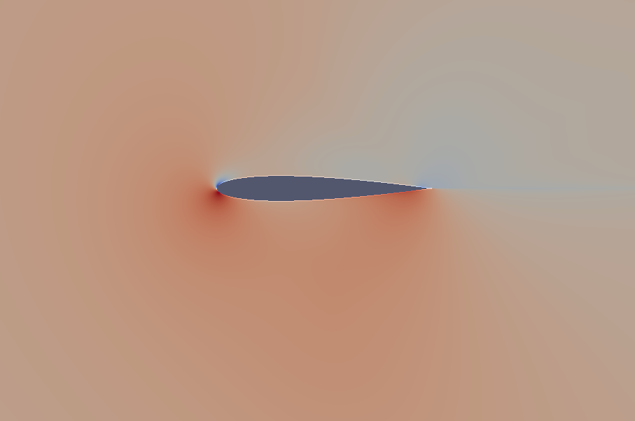
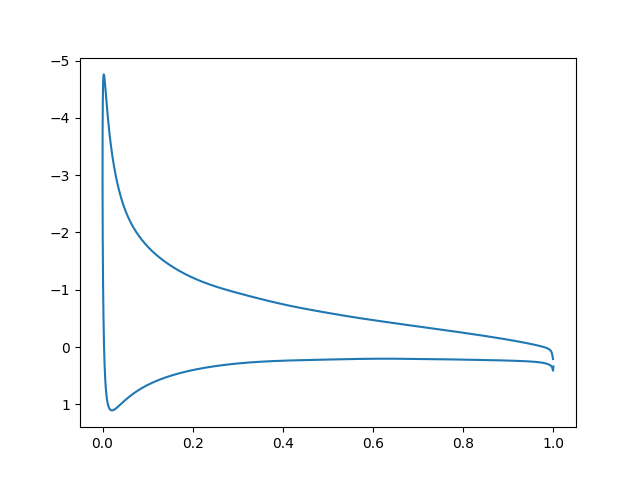

SU2
SU2 aerodinamik simülasyonları için açık kaynak bir programdır. Sıfırdan derleyip kullanmak için alttaki tarifi takip edebiliriz.
Kaynak kodu indirelim, açalım. İşler program /usr/local/bin altına
gidecek şekilde kurmak için, dizine girip
./meson.py build --prefix=/usr/local
./ninja -C build install
Meson ve ninja yeni bir derleme sistemi (daha önce make ile yapılan işleri
yapıyor), hızlı işliyor. Derleme sonunda .bashrc içine koymanız tavsiye
edilen bazı ayarlar var,
export SU2_RUN=/usr/local/bin
export SU2_HOME=/home/user1/vs/vs/SU2-7.0.2
export PATH=$PATH:$SU2_RUN
export PYTHONPATH=$PYTHONPATH:$SU2_RUN
gibi olabilir. Bunları .bashrc içine koyalım, komut satırı kapatıp
tekrar açalım.
Programı kullanmak için bir örnek takip edelim, mesela alttaki [1] dersi takip edebiliriz.
Derste gösterilen ayar dosyası (configuration file) ve hesapsal izgarayı tanımlayan dosya (mesh file) indirilir. Bu ders türbülanslı bir ortamda bir uçak kanadı kesidinin (airfoil) hava akışına nasıl tepki vereceğini simüle ediyor. Hava kesidin üzerinden soldan sağa doğru 52 m/s hızı civarında akıyor, kesit yere göre 10 derece açıyla duruyor (angle of attack -AOA-). Kesitlerin tasarımı öyledir ki tasarıma göre bu akış alttan itiş (lift) ve hava direnci (drag) oluşturur, eğer itiş yeterince büyükse uçak uçar.
Artık
SU2_CFD turb_naca0012.cfg
ile hesabı işletiriz. Döngü sayısı fazlaysa, onu mesela ITER=500
azaltırız. İşlem bitince surface_flow.vtk, flow.vtk, dosyaları
üretilmiş olacak. Bu dosyalar sonuç verilerini içeriyor, onlara
görsel şekilde bakmak mümkün, paraview programı bunun için.
apt-get update
apt-get install paraview
sudo apt install libcanberra-gtk-module libcanberra-gtk3-module
Simdi paraview ile işletiriz, önce surface_flow.vtk açarız,
Apply düğmesine tıklarız. Sonra flow.vtk açarız, tekrar
Apply. Bu alttaki görüntüyü çıkartmalı,

Bu basınç haritasını gösteriyor, maviye yakın renkler alçak basınç, kırmızıya yakın olanlar yüksek basınç. Basınç tabii ki bir itiş kuvvetidir, eğer altta daha fazla yüksek basınç varsa kanat kesidi uçmaya daha elverişlidir.
Simülasyonda kullanılan NACA 0012 kanat kesidi standart bir şekli, testlerde sürekli kullanılır. Üstte görülen simülasyon iki boyutta, istikrarlı (steady) ve türbülansı ortalamayla basitleştirmeye uğraşan RANS yaklaşımını kullanmıştır (spesifik olarak Spalart-Allmaras türbülans modeli). Diğer teknik parametreler orijinal ders sayfasında bulunabilir.
Basınç Katsayısı (Pressure Coefficient)
Ders [1]'de gösterilen grafik için (10 derece AOA için olan) SU2'ye bazı ek veri dosyaları ürettirmek lazım, ayar dosyasında,
OUTPUT_FILES= (RESTART, TECPLOT_ASCII, SURFACE_TECPLOT_ASCII)
tanımı bize içinde metinsel çıktı olan surface_flow.dat dosyasını
verecek. Bu veride 7'inci kolon basınç katsayısı Cp'yi içeriyor, x
ekseninde 0'inci kolondaki x verisi. Alttaki kodla grafikleyebiliriz.
import pandas as pd
df = pd.read_csv('surface_flow.dat',skiprows=3,sep='\t',header=None)
plt.gca().invert_yaxis()
plt.plot(df[0], df[6])
plt.savefig('su2_02.png')

Y ekseninin tersine çevirilmesinin sebebi kesidin üst tarafını grafiğin üst kısmında görebilmek, ve bakıyoruz ki orada değerler eksi, ki Cp tanımına göre alçak basınç orada. Grafik aynı x değeri için iki y değeri gösteriyor normal olarak çünkü kesidin alt kısmı ve üst kısmı var.
Paralel isletmek icin
parallel_computation.py -f turb_naca0012.cfg -n 4
Kaynaklar
[1] https://su2code.github.io/tutorials/IncTurbulentNACA0012/
Yukarı